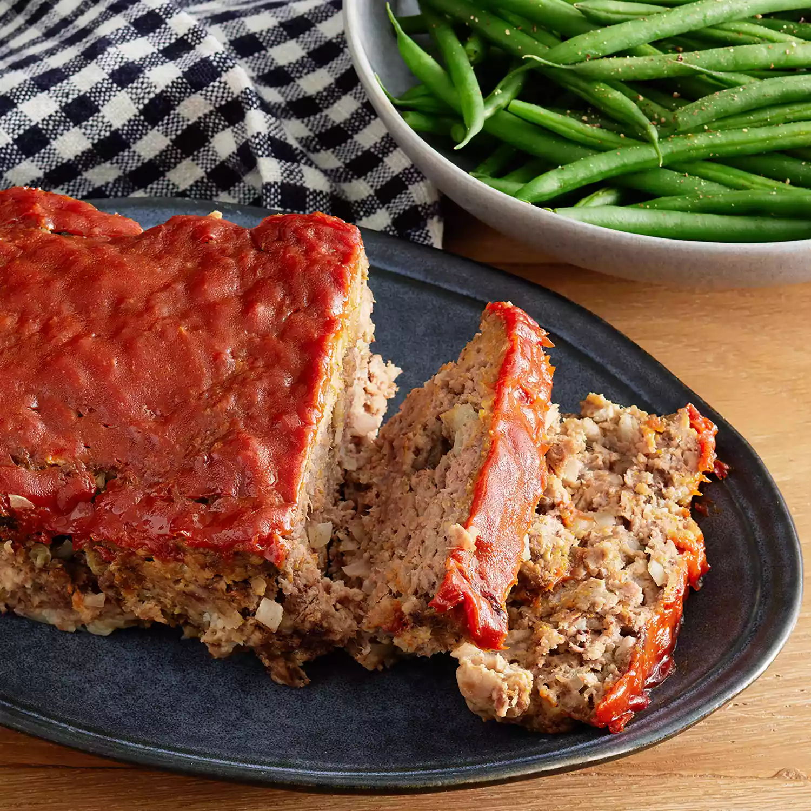

This meatloaf doesn't take long to make at all, and it's very good!
- Ground beef
- Eggs
- Onion
- Milk
- Dried bread crumbs
- Seasonings
- Ketchup
- Brown sugar
- Mustard
- Preheat the oven to 350 degrees F (175 degrees C). Lightly grease a 9x5-inch loaf pan.
-
Combine ground beef, onion, milk, bread crumbs and egg in a
large bowl; season with salt and pepper. Transfer into prepared loaf pan.
-
Mix ketchup, brown sugar, and mustard together in a small bowl until well combined;
pour over meatloaf and spread it evenly over the top
-
Bake in the preheated oven until no longer pink in the center, about 1 hour.